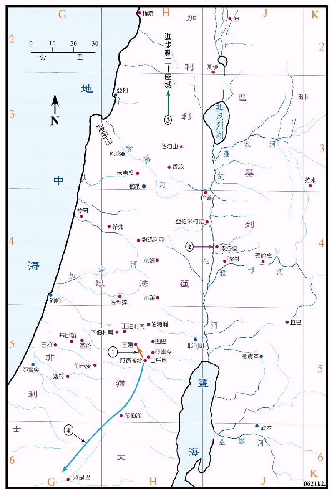

970～930BC

行动线说明
| 序号 | 圣经 | 说明 |
|---|---|---|
| 王上1:1-4 | 选童女伺候大卫王 | |
| 王上2章 | 大卫王吩咐未了之事，所罗门一一遵行。 | |
| 1 | 王上3:4 | 所罗门往基遍献祭，耶和华在梦中向他显现，并祝福他，赐他智慧。 |
| 2 | 王上7:46 | 户兰在约但河平原铸造圣殿中的铜器。 |
| 3 | 王上9:11-14 | 所罗门把加利利的二十座城给了推罗王，但希兰不喜悦。 |
| 王上9:15-19 | 所罗门在各重要之处建城。 | |
| 4 | 王上11:29-40 | 先知亚希雅向以法莲人耶罗波安预言，说他必作以色列十个支派的王，然后耶罗波安逃往埃及。 |